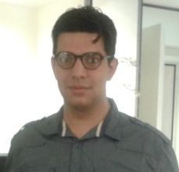

Matías Mirabelli
About Me
I was born in Mataderos, Ciudad Autónoma de Buenos Aires, Argentina on November 13, 1987.
I live in San Telmo, Ciudad Autónoma de Buenos Aires, Argentina.
I like reading (ask me what and why!); writing my impressions about everything I meet; biking on sunny days; traveling! I like to take photos of buildings and people doing things and high contrast scenarios.
I try to keep my mind clear, my spirit strong and my body healthy. That's my way for finding clever solutions to everyday's challenges.
I like to participate in open source software communities. I believe in the freedom of open communities.
I really like and appreciate simplicity. I'm self-taught.
Languages
- Spanish (mother tongue)
- English (upper intermediate)
- German (basic, ongoing at Goethe Institut Argentina)
- Esperanto (progresanta)
Career Summary
I went to a technical middle school specialized in electronics. There I learnt the hardware basis and I used to program microcontrollers for school projects.
During the last years in middle school I started learning web development in order to complement the low-level knowledge. I began as freelance programmer by offering institutional sites to local small companies. In the beginning I used PHP to build stateless sites and after a while when my customers required more complex solutions I get involved with Java.
Since five years ago I'm focusing on frontend engineering. I worked on large projects since their beginning and I participated in the functional definition, architecture design, and often in team coordination. I was on teams of almost twenty people.
Now and since a year and a half I'm specializing in social networks platforms. I work on a large product that helps media companies to generate content in social networks, to interact with users and to analyze the overall campaigns engagement.
I like the challenge of building high performance teams based on communication and people development.
I'm also a Node.js enthusiast. You can take a look at my projects on github :)
Employment History
-
Globant (2009 - now)
- Java Web Developer: domain driven development by using Hibernate/Spring MVC/Freemarker based infrastructure.
- Frontend Engineer: SaaS products architecture design and development by using several technologies. UI praxis development.
- JavaScript/Web Instructor: JavaScript and web development trainings; hackathons organization.
- Tech Lead: requirements, people and product development coordination by using agile platforms.
- Interviewer: perform phone screenings and technical interviews to hire people dedicated to frontend development.
-
CDA (2007 - 2009)
- Java Web Developer: crowd sourcing applications development by using Ibatis/Spring WS/Struts based infrastructure.
- Frontend Developer: Request/Response JSP-based frontend development.
-
W3americas (2006 - 2007)
- Frontend Developer: progressive maintenance of businesses portals.
Education
-
E.N.E.T N°17 D.E. 20 (2001 - 2006)
- Electronic Technician
- Alfonsina Storni (primary school)
Weaknesses
- Procrastination: I easily lose focus when there's noise around. This a well-know weakness for me and I've got my strategies to deal with it.
- Enthusiasm: sounds like a strength but only what's necessary. I usually find myself shutting me up to listen what the other ones have to say.
- Over-functioning: sometimes I try to help everyone every time instead of pointing out things and let them follow a natural path.
- Micro-management: usually I think there're processes to cover any development lifecycle scenario. However I understand we all are people so we're always over processes.
Strengths
- Team work: I strongly encourage people to build a friendly environment of cooperation.
- Know limits: I constantly try to understand my own limits. I tell when something is out of my knowledge and then I quickly try to trepass impediments studying, asking, researching or delegating what's necessary.
- Sense of value: I've got a nice sense of what's worth in a given context. It helps me to take decisions for following the "right direction" leading software development.
- Lateral thinking: I like to deeply understand problems before starting solving them. I try to simplify not only specific problems but the whole value chain, giving place to any kind of solution (indeed, not everything can be addressed by developing software!)
Contact me
You can contact me either via Twitter, Facebook or by email to .